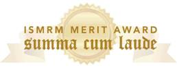

{kind=link}
News
2012
- Our lab's paper on mapping the mouse neurovasculature with MR microscopy has been selected by PLoS One for its NeuroMapping and Therapeutics Collection
- Our lab's research on in vivo visualization of angiogenisis during wound healing is featured on journal cover.
- We welcome Leland Pung and Woo Taek Lim, junior Biomedical Engineering undergraduate students to the lab.
- Congratulations to Eugene Kim for successfully defending his thesis proposal!
- Our lab's research on brain tumor imaging using MR Microscopy has been highlighted by the Radiological Society of North America (RSNA)[Link]
- Grad student Eugene Kim is the recipient of the Summa Cum Laude Merit Award for the 20th Annual ISMRM meeting for his abstract entitled “Assessing Breast Cancer Angiogenesis In Vivo: Which MRI Biomarkers are Relevant?”. - Congrats Eugene!
- The Pathak Lab welcomes Meher Vijay, graduate student from the Dept. of Computer Science.
- The Pathak Lab welcomes Charlesa Plummer as a research volunteer.
- Grad student Eugene Kim has been invited to give an oral presentation about his work on imaging tumor hypoxia at the 20th Annual Meeting of the International Society for Magnetic Resonance in Medicine(ISMRM) in Melbourne, Australia.
- Eugene Kim has been awarded a travel stipend award from the International Society for Magnetic Resonance in Medicine.
- Grad student Abhishek Rege's article on Laser Speckle Imaging of Wound Healing was featured on the cover of the March issue of the journal Angiogenesis [Link].
- The Johns Hopkins University department of Biomedical Engineering features news about our cover article [Link]
{kind=link}
2011
- Eugene Kim is the recipient of the Bill Negendank Young Investigator Award at the International Society for Magnetic Resonance in Medicine's Cancer Workshop. "This award recognizes the most promising young scientists in the field of cancer MR" - Congrats Eugene!
- Eugene Kim's article on MR Microscopy of Brain Tumors is featured on the cover of the July issue of the Journal of Cerebral Blood Flow and Metabolism [Link].
- Grad student Jana Cebulla is accepted into the PhD program at the Norwegian University of Science and Technology, Trondheim, Norway - Good luck Jana!
- Jana Cebulla completes her Diploma Thesis and passes with Highest Honors - Congrats Jana!
- Biomedical Engineering undergraduate student Xiang Li is the recipient of the JHU Provosts Undergraduate Research Award (PURA) - Congrats Xiang!
{kind=link}